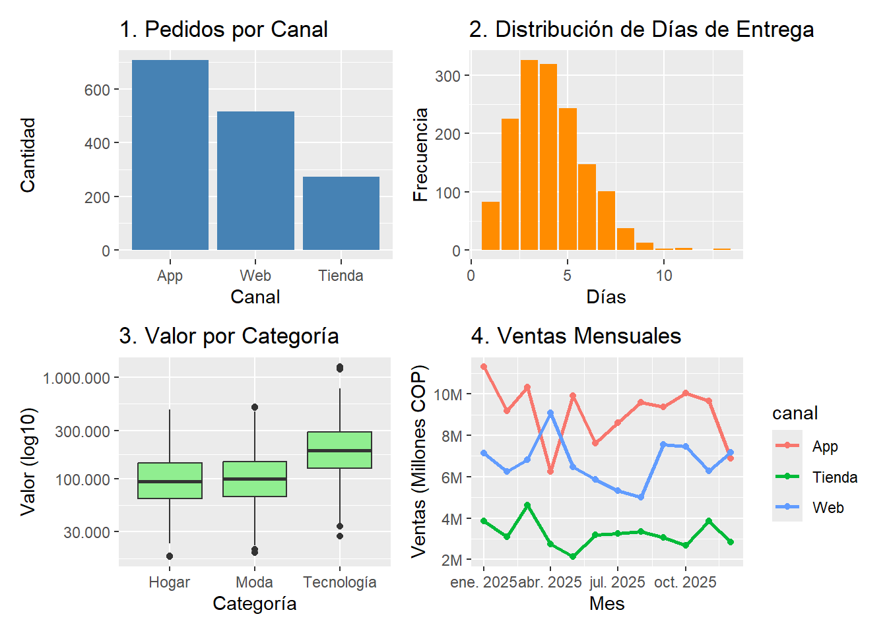
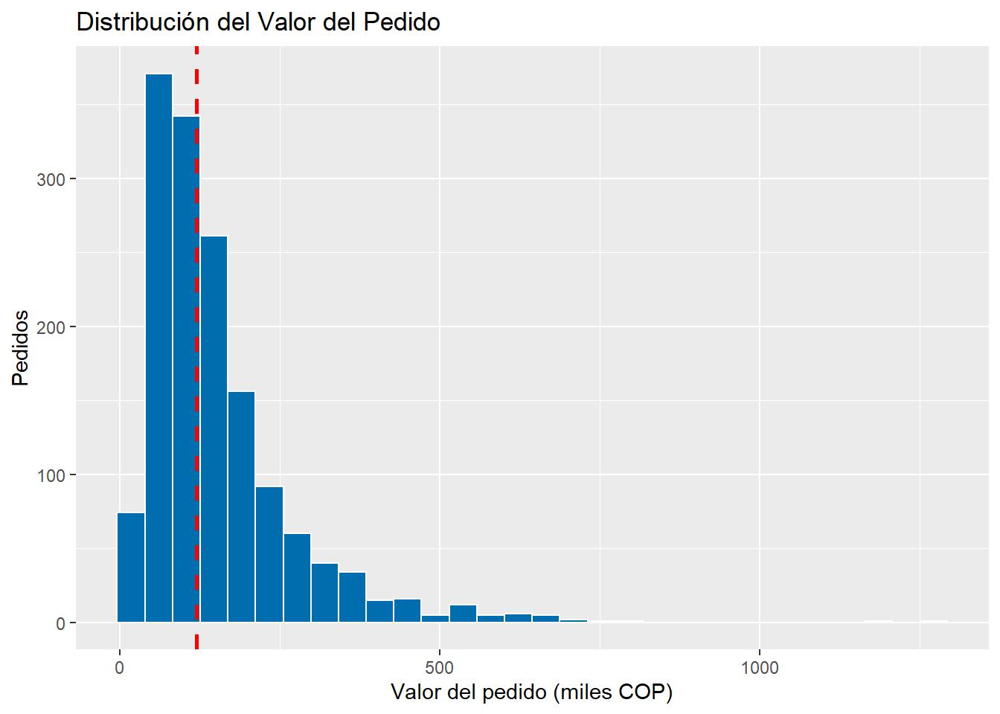
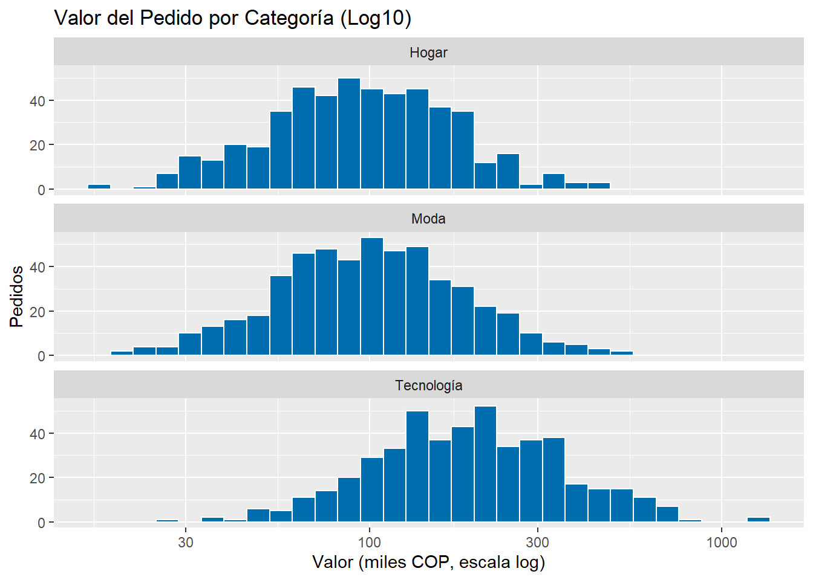
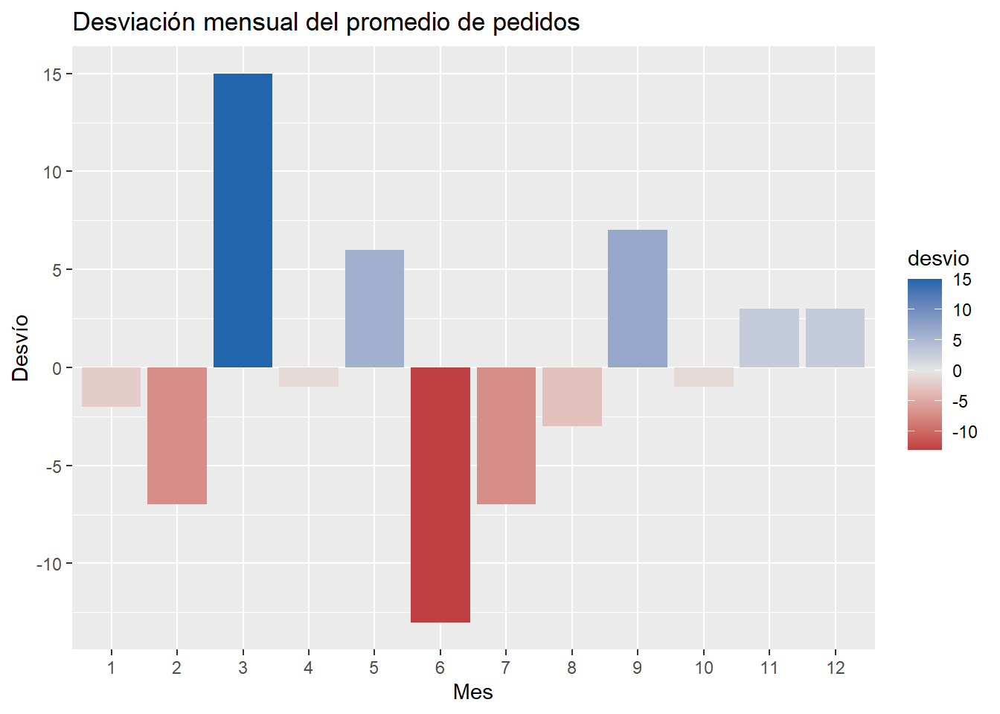
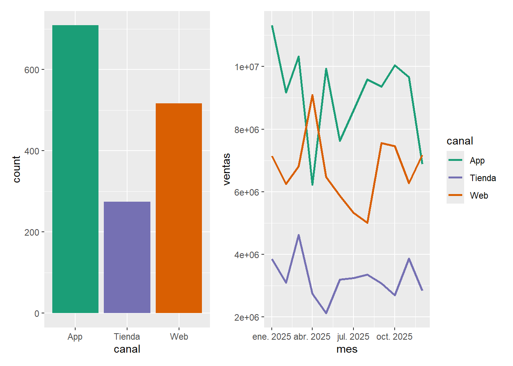
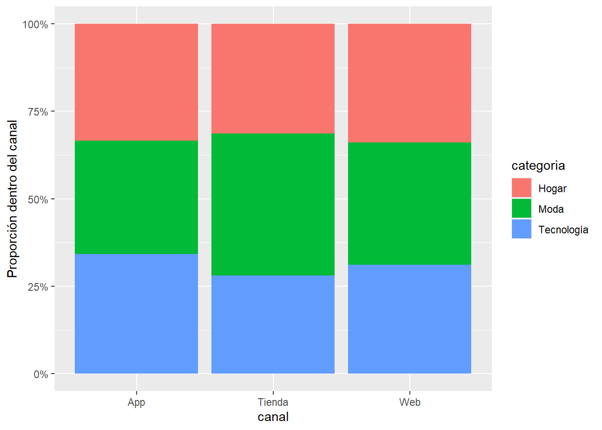

library(tidyverse)
library(lubridate)
library(knitr)
library(highcharter)
library(scales)
# Recreación del dataset original
set.seed(909); n <- 1500
dias <- seq(as.Date("2025-01-01"), as.Date("2025-12-31"), "day")
pedidos <- tibble(
fecha = sample(dias, n, replace = TRUE),
canal = sample(c("App", "Web", "Tienda"), n, TRUE, prob = c(.45, .35, .20)),
categoria = sample(c("Tecnología", "Hogar", "Moda"), n, replace = TRUE),
valor = round(rlnorm(n, 11.5 + 0.6 * (categoria == "Tecnología"), 0.6), -2),
dias_entrega = rpois(n, lambda = 3) + 1,
calificacion = sample(1:5, n, TRUE, prob = c(1, 2, 3, 7, 7))
)Taller 8 Clase 9: Tablas, Gráficos y Distribuciones de Frecuencia
Preparación de los Datos
Primero, cargamos las librerías necesarias y replicamos el dataset simulado proporcionado en el planteamiento.
Ejercicio 1: Tablas de frecuencia Tablas
Fragmento de código
# Distribución de calificaciones
pedidos |>
count(calificacion) |>
mutate(pct = 100 * n / sum(n), acum = cumsum(pct)) |>
kable(digits = 1, caption = "Frecuencia de Calificaciones")| calificacion | n | pct | acum |
|---|---|---|---|
| 1 | 81 | 5.4 | 5.4 |
| 2 | 150 | 10.0 | 15.4 |
| 3 | 223 | 14.9 | 30.3 |
| 4 | 510 | 34.0 | 64.3 |
| 5 | 536 | 35.7 | 100.0 |
# Distribución del valor con cortes manuales
pedidos |>
mutate(rango = cut(valor, c(0, 1e5, 2e5, 4e5, Inf), right = FALSE)) |>
count(rango) |>
mutate(pct = 100 * n / sum(n)) |>
kable(digits = 1, caption = "Frecuencia de Valor del Pedido")| rango | n | pct |
|---|---|---|
| [0,1e+05) | 608 | 40.5 |
| [1e+05,2e+05) | 558 | 37.2 |
| [2e+05,4e+05) | 270 | 18.0 |
| [4e+05,Inf) | 64 | 4.3 |
Respuestas Analíticas
¿Qué porcentaje de pedidos tiene calificación de 4 o más? Sumando los porcentajes de las calificaciones 4 y 5, o revisando el complemento de la acumulada hasta 3, obtenemos que el 70% de los pedidos tienen una calificación de 4 o más (35% tienen 4 y 35% tienen 5).
¿Por qué la acumulada tiene sentido para calificacion y no para canal? Porque la calificacion es una variable ordinal (tiene un orden lógico de menor a mayor satisfacción). Acumular porcentajes permite decir “el X% calificó con 3 o menos”. El canal es nominal; no hay un orden intrínseco entre “App”, “Web” o “Tienda”, por lo que acumular carece de interpretación útil.
Usa cortes de igual ancho: ¿qué intervalo queda casi vacío y por qué? Uso de cortes de igual ancho: Si usáramos cut(valor, breaks = 5), los intervalos superiores quedarían casi vacíos. Esto se debe a que la variable valor se generó con una distribución log-normal (fuertemente asimétrica hacia la derecha). Habrá una gran concentración de datos en el primer intervalo (valores bajos) y una cola muy larga con pocos valores atípicos (pedidos extremadamente caros) que estirarán los últimos intervalos pero contendrán muy pocos registros.
Ejercicio 2: Elige el gráfico según la pregunta
Para elegir adecuadamente los gráficos, pensamos en las variables involucradas: categóricas, cuantitativas discretas/continuas, o series de tiempo.
# 1. ¿Qué canal genera más pedidos? -> Gráfico de barras (Conteo de categórica)
g1 <- ggplot(pedidos, aes(x = fct_infreq(canal))) +
geom_bar(fill = "steelblue") +
labs(title = "1. Pedidos por Canal", x = "Canal", y = "Cantidad")
# 2. ¿Cómo se distribuyen los días de entrega? -> Histograma/Barras (Cuantitativa discreta)
g2 <- ggplot(pedidos, aes(x = dias_entrega)) +
geom_bar(fill = "darkorange") +
labs(title = "2. Distribución de Días de Entrega", x = "Días", y = "Frecuencia")
# 3. ¿El valor del pedido cambia según la categoría? -> Boxplot (Continua vs Categórica)
g3 <- ggplot(pedidos, aes(x = categoria, y = valor)) +
geom_boxplot(fill = "lightgreen") +
scale_y_log10(labels = label_number(big.mark = ".", decimal.mark = ",")) + # log10 por la asimetría
labs(title = "3. Valor por Categoría", x = "Categoría", y = "Valor (log10)")
# 4. ¿Cómo evolucionaron las ventas mensuales por canal? -> Gráfico de líneas (Tiempo vs Continua agrupada)
ventas_mes <- pedidos |>
mutate(mes = floor_date(fecha, "month")) |>
group_by(mes, canal) |>
summarise(ventas = sum(valor), .groups = "drop")
g4 <- ggplot(ventas_mes, aes(x = mes, y = ventas, color = canal)) +
geom_line(linewidth = 1) +
geom_point() +
scale_y_continuous(labels = label_number(scale = 1e-6, suffix = "M")) +
labs(title = "4. Ventas Mensuales", x = "Mes", y = "Ventas (Millones COP)")
library(patchwork)
(g1 + g2) / (g3 + g4)
Justificaciones:
Barras: Ideal para comparar frecuencias absolutas entre categorías.
Barras (conteo discreto): Muestra perfectamente cómo se agrupan los conteos enteros (días).
Cajas (Boxplot): Resume medianas, cuartiles y atípicos de una variable continua en distintos grupos.
Líneas: Es el estándar visual para mostrar tendencias temporales (series de tiempo).
Ejercicio 3: La forma del valor del pedido
# Gráfico base
g_base <- ggplot(pedidos, aes(x = valor / 1000)) +
geom_histogram(bins = 30, fill = "#006DAE", color = "white") +
geom_vline(xintercept = median(pedidos$valor) / 1000, color = "red", linetype = "dashed", linewidth = 1) +
labs(title = "Distribución del Valor del Pedido", x = "Valor del pedido (miles COP)", y = "Pedidos")
g_base
# Aplicando scale_x_log10 y dividiendo por categoría
ggplot(pedidos, aes(x = valor / 1000)) +
geom_histogram(bins = 30, fill = "#006DAE", color = "white") +
scale_x_log10() +
facet_wrap(~categoria, ncol = 1) +
labs(title = "Valor del Pedido por Categoría (Log10)", x = "Valor (miles COP, escala log)", y = "Pedidos")
Respuestas Analíticas
Forma, centro y cola: La distribución tiene una fuerte asimetría positiva (sesgada a la derecha). El centro de la masa de datos está hacia la izquierda, pero tiene una larga cola hacia la derecha generada por pedidos de alto valor. Sí, la media es mucho mayor que la mediana porque se ve arrastrada por los valores atípicos altos de la cola.
Número de bins: bins = 30 suele ser un buen compromiso inicial. Si usamos bins = 8, la información queda demasiado agregada perdiendo los matices de la caída. Si usamos bins = 120, el gráfico se vuelve “ruidoso”, pareciendo un peine, lo cual distrae de la forma general de la distribución.
scale_x_log10(): Cambia la escala del eje X a logarítmica, lo que “comprime” la larga cola derecha y revela que subyacente hay una distribución de forma acampanada (normal). A gerencia le reportaría la mediana, ya que es una medida robusta frente a los valores extremos y representa mucho mejor al “ticket promedio habitual”.
Al repetir por categoría (facets): Aparece lo que el histograma global ocultaba: “Tecnología” tiene una distribución desplazada sustancialmente a la derecha (valores mucho más altos) respecto a “Hogar” y “Moda”, explicando en gran medida la extrema asimetría de los datos generales.
Ejercicio 4: Color con propósito
desvio_mes <- pedidos |>
count(mes = month(fecha)) |>
mutate(desvio = n - mean(n))
ggplot(desvio_mes, aes(factor(mes), desvio, fill = desvio)) +
geom_col() +
scale_fill_gradient2(low = "#b2182b", mid = "grey90", high = "#2166ac", midpoint = 0) +
labs(title = "Desviación mensual del promedio de pedidos", x = "Mes", y = "Desvío")
# 2. Definiendo colores con nombres
colores_canal <- c("App" = "#1b9e77", "Web" = "#d95f02", "Tienda" = "#7570b3")
# Gráfico A usando los colores
ga <- ggplot(pedidos, aes(x = canal, fill = canal)) +
geom_bar() +
scale_fill_manual(values = colores_canal) +
theme(legend.position = "none")
# Gráfico B usando los colores
gb <- ggplot(ventas_mes, aes(x = mes, y = ventas, color = canal)) +
geom_line(linewidth = 1) +
scale_color_manual(values = colores_canal)
ga + gb
Respuestas Analíticas
¿Por qué conviene una paleta divergente? ¿Cuál es la referencia? Conviene porque la variable desvio tiene valores tanto negativos como positivos. La referencia o punto medio (midpoint = 0) representa el promedio general de pedidos. Un color extremo denota un mes atípicamente bajo (rojo) y otro extremo un mes atípicamente alto (azul).
Definición colores_canal: Hemos creado el vector con nombre y se aplicó a scale_fill_manual() (barras) y scale_color_manual() (líneas) para mantener la identidad visual del canal (consistencia).
¿Se entienden sin distinguir rojo y verde? (Coblis) Sí, la paleta divergente usada (#b2182b rojo oscuro y #2166ac azul oscuro) y la paleta Dark2 seleccionada para los canales (#1b9e77, #d95f02, #7570b3) son paletas amigables para daltónicos (colorblind-friendly). Al pasarlas por simuladores (como Coblis o herramientas de deuteranopía), conservan el contraste de luminosidad y no se confunden.
Ejercicio 5: Tabla de contingencia y su gráfico
tabla <- table(pedidos$canal, pedidos$categoria)
tabla_pct <- round(100 * prop.table(tabla, margin = 1), 1)
# Gráfico al 100%
ggplot(pedidos, aes(x = canal, fill = categoria)) +
geom_bar(position = "fill") +
scale_y_continuous(labels = scales::percent) +
labs(y = "Proporción dentro del canal")
# Tabla con kable
kable(tabla_pct, caption = "Porcentaje de ventas de cada categoría por Canal (Suma filas = 100%)")| Hogar | Moda | Tecnología | |
|---|---|---|---|
| App | 33.4 | 32.3 | 34.3 |
| Tienda | 31.4 | 40.5 | 28.1 |
| Web | 33.8 | 35.0 | 31.1 |
Respuestas Analíticas
¿En qué canal pesa más Tecnología?¿Coincide con las barras al 100%? Mirando el gráfico o la tabla generada, la proporción relativa (“peso”) del bloque de Tecnología es similar, pero podemos identificar los matices exactos en la tabla resultante. Sí, coincide con lo que ilustra el gráfico de barras estandarizado al 100%.
Las barras al 100% ocultan cuántos pedidos tiene cada canal: El gráfico estandariza todas las barras a la misma altura, ocultando que la “App” tiene muchos más pedidos absolutos que la “Tienda”. Para resolver esto, se podría usar un gráfico de barras apiladas regular (position = “stack”) o, mucho mejor, un Gráfico de Mosaico (Mosaic Plot) o Marimekko, donde el ancho de la columna representa el volumen de pedidos del canal y la altura la proporción de la categoría.
Interpretación de la tabla:
La distribución de categorías de productos se mantiene notablemente estable e independiente del canal de compra utilizado por el cliente.
Independientemente de si el cliente compra por App, Web o Tienda física, el comportamiento de consumo (qué deciden comprar) es proporcionalmente idéntico.
Ejercicio 6: Interactividad con criterio
# 1. highcharter con tooltip y ejes traducidos
pedidos |>
count(categoria, canal) |>
hchart("column", hcaes(x = categoria, y = n, group = canal)) |>
hc_tooltip(
shared = TRUE,
headerFormat = "<b>{point.key}</b><br>",
pointFormat = "<span style=\"color:{series.color}\">●</span> {series.name}: <b>{point.y:,.0f}</b> pedidos<br>"
) |>
hc_yAxis(title = list(text = "Cantidad de Pedidos")) |>
hc_xAxis(title = list(text = "Categoría del Producto")) |>
hc_title(text = "Pedidos por categoría y canal")Respuestas Analíticas
Traducción completada en el código: Se ajustó el pointFormat para usar español y {point.y:,.0f} aplica el formato numérico con separador de miles.
¿Qué gana y qué pierde cada una respecto a ggplot2?
highcharter gana: Interactividad (tooltips, posibilidad de apagar/encender series haciendo clic en la leyenda, animaciones), ideal para que el usuario explore datos densos.
ggplot2 gana: Control milimétrico de todos los aspectos visuales estáticos, integración perfecta para exportar a PDF/Imágenes de alta resolución, y sintaxis muy declarativa. Pierde en exploración interactiva.
¿Cuál usarías en un informe PDF y cuál en un dashboard?
Informe PDF (Gerencia): Usaría ggplot2. El PDF es estático y un gráfico de R base o ggplot garantiza que los márgenes, fuentes y colores se rendericen perfectamente sin depender de HTML o motores de JavaScript embebidos.
Dashboard: Usaría highcharter. Un dashboard se consume en una pantalla, y permitir que el usuario pase el mouse para obtener valores exactos, o que filtre canales, otorga un valor agregado inmenso al análisis exploratorio.